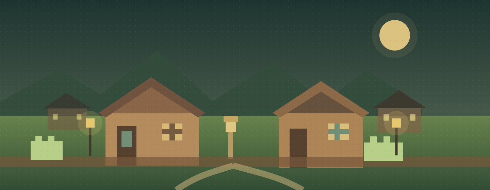

A place to call home
Residents keep a home, personal storage, and a name you can recognise around town.

Give every villager a home, a daily rhythm, and a place in a community that grows with them.
Villagers: Repurposed turns the familiar village into a small, persistent community.
Residents keep homes and personal belongings, follow a daily schedule, take on useful work, and meet at the heart of town. New shared places and trade routes give the village room to grow over time.
Read the project on GitHub ↗Small moments connect into a village that keeps its character through every day and every return.
Residents keep a home, personal storage, and a name you can recognise around town.
Daily schedules bring work, meals, rest, and conversation together in visible routines.
Shared stores, neighbours, markets, and new building plans make the village feel connected.
Works with Fabric villages and is designed to recognise the normal bells and beds used by world-generation mods. Current compatibility and development status live in the repository.
A VILLAGE IS MADE BY ITS PEOPLE